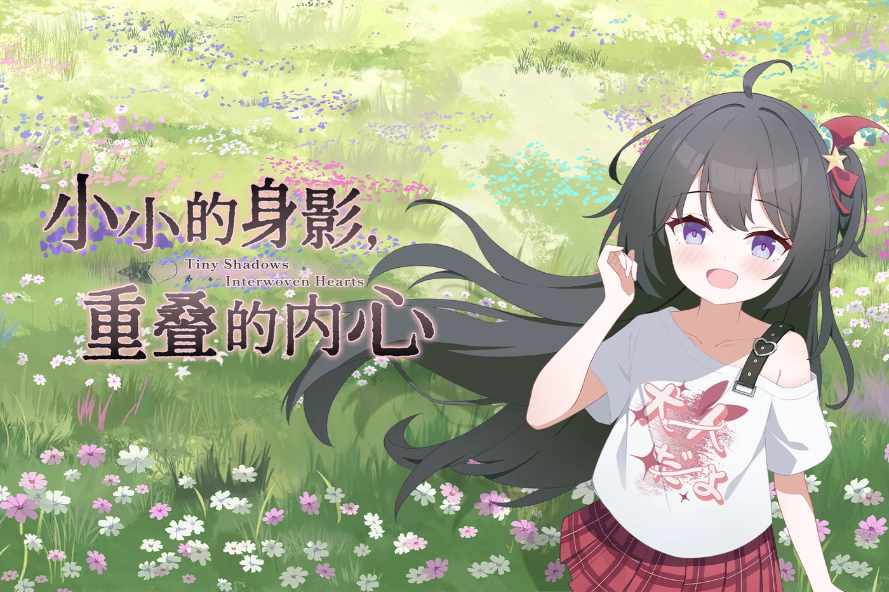
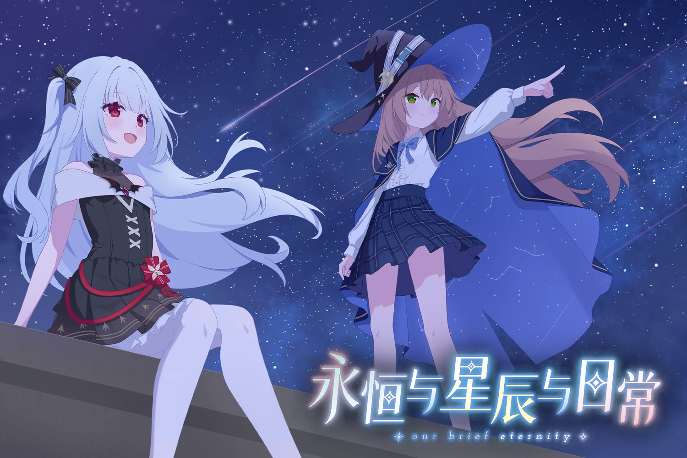
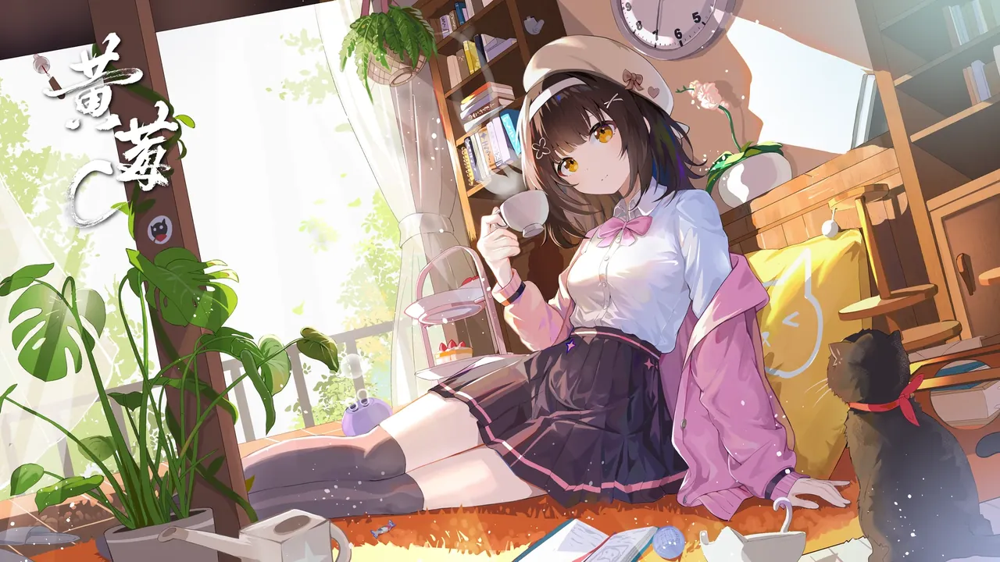
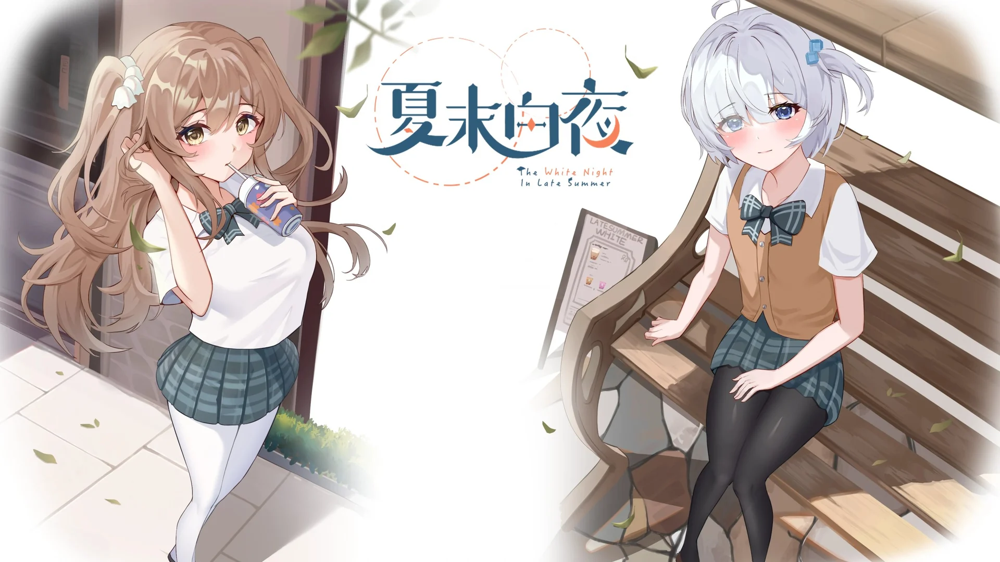

小小的身影，重叠的内心
小米手环非官方移植把《小小的身影，重叠的内心》搬进小米手环的非官方移植版， 不用掏出手机，抬起手腕就能接着读下去。
链接会唤起已安装的 Astrobox 客户端；还没装的话先去 Astrobox 官网下载。
作品下载
目前上线的五款小米手环移植作品，均为非官方个人移植、免费提供。 点下面的按钮会唤起 Astrobox 直接安装。

把《小小的身影，重叠的内心》搬进小米手环的非官方移植版， 不用掏出手机，抬起手腕就能接着读下去。
链接会唤起已安装的 Astrobox 客户端；还没装的话先去 Astrobox 官网下载。
Galgod 的小米手环非官方移植版。原作是一部视觉小说， 要做的只有读，然后在关键的地方替主角做决定。
链接会唤起已安装的 Astrobox 客户端；还没装的话先去 Astrobox 官网下载。

《永恒与星辰与日常》的小米手环非官方移植版。原作是一部视觉小说， 讲的是普通日常里慢慢长出来的那点不普通。安装包正在上传， 源码已经先公开了。
这一部还没上传，安装与源码都暂时打不开，等传完会一起放出来。

《黄莓C》的小米手环非官方移植版。 目前是 demo 阶段，处于每日构建状态，安装包还没上传到 Astrobox，源码已经先公开了。
每日构建阶段，安装包还没上传到 Astrobox，所以暂时装不了；想先看代码点「查看源码」。

《夏末白夜》的小米手环非官方移植版。还在整理阶段，安装包暂时没有上传到 Astrobox，源码已经先公开了。
安装包还没上传到 Astrobox，所以暂时装不了；想先看代码点「查看源码」。
Astrobox 是一个穿戴设备第三方工具箱，可以在电脑或手机上把快应用安装到手环。 前往 Astrobox 官网
合集卡片
一张卡把两部作品收在一起。按住往上拖、滚鼠标滚轮、或用方向键和下面的按钮都能翻页； 序号下面的作品名就是安装入口，点进去由 Astrobox 打开。
快速链接
主要的活动据点。代码和各个项目都放在 GitHub，问题反馈也走那里。
在线工具
自己做的几个小工具，都是纯前端、本地运行 —— 文件不会被上传到任何服务器，断网也能用。
未来开发项目
计划已经有了，时间也标了。在真正开起来之前，先放在这里。
Linux 镜像下载
这里提供一些 Linux 镜像下载链接。
常见问题
关于作品状态、手环移植与本地工具，先把常见疑问集中在这里。
不是。它是面向小米 Vela 设备的个人技术研究与适配成果，并非原作官方版本或授权衍生产品。 作品名称、角色、剧情与美术资源的著作权归原作者及相关权利人所有，本站不主张任何原作权利。 原项目地址见卡片上的仓库链接。
当前公开的两款移植都面向小米手环 9 Pro。快应用形态的适配高度依赖屏幕尺寸， 方屏设备（如手环 8 Pro / 10 Pro、REDMI Watch 系列）比例不同，直接安装会出现构图错位，请不要混装。 更多机型的适配会视设备情况陆续补上。
通过 Astrobox 安装。 先装好客户端并连接手环，再点作品卡上的「前往 Astrobox 安装」按钮， 浏览器会唤起 Astrobox 并直接打开对应资源。装好后在手环的应用列表里就能找到它。
免费。《小小的身影，重叠的内心》与《想成为 Galgame 领域大神！！！》都是非官方的个人移植作品， 不收取任何费用，也不代表原作售价。
不会。「在线工具」里的三个工具（剧本编辑器、剧本格式转换器、TXT 切割器） 全部纯前端运行，文件只在你自己的浏览器里读写，不会离开本机， 也不经过任何服务器。断网状态下同样可以正常使用。
最直接的方式是在对应项目的 GitHub 仓库里提 Issue，附上设备和复现步骤。 也可以通过页脚的 QQ 群找到我。